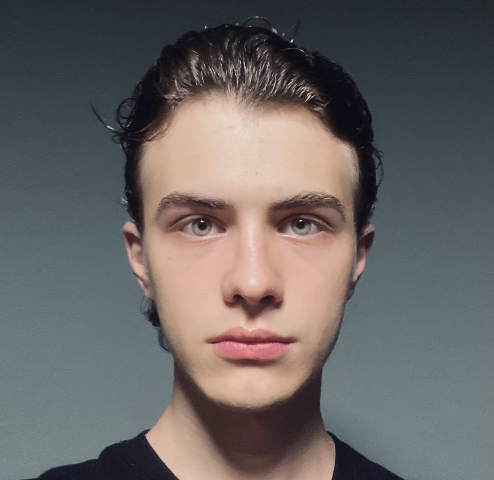

Summary
I am a hardworking web developer with an interest in various engineering fields
Education
-
Communal institution
"Secondary school of I-III degrees No. 22
of Vinnytsia City Council"
(2011-2028, Vinnytsia, Ukraine)
-
Podilsky Science-Technical Lyceum
(2018-2022, Vinnytsia, Ukraine)
-
Saxion University of Applied Sciences,
Creative Media and Game Technologies
(2022-2026, Enschede, Netherlands)
Work experience
Skills
- HTML5, CSS3, JavaScript ES6, Java, C#, C++/C
- Dot NET
- React.js
- Node.js
- Express.js
- EJS
- SQL, Postgres
- REST Api
- OAuth 2.0
- Web3 / Blockchain Development
- DApp Development
- Crypto Tokens
- NFT
- Unix
- Git
Awards
-
2nd Place on ICT Olympiad of City Level (2018, Vinnytsia, Ukraine)
-
1st Place on ICT Olympiad of City Level (2019, Vinnytsia, Ukraine)
-
1st Place on ICT Olympiad of Province Level (2019, Vinnytsia, Ukraine)
-
1st Place on ICT Olympiad of City Level (2021, Vinnytsia, Ukraine)
-
1st Place on ICT Olympiad of Province Level (2021, Vinnytsia, Ukraine)